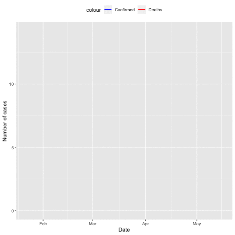

It seems the contents in weeks 5 and 6 are too heavy. I’ll make this week a little more relaxing and fun.
Read in the COVID-19 data, provide R codes and results for the following questions:

Learn how to generate animation in R graphics. Let me know if this is difficult.
Review the content in week 4. Pay more attention to the R base graphics content. Review the homework. Redo homework questions 6 and 7. Note: don’t copy your old codes. Be honest to yourself. See if you can do these homework questions faster than first time.
Review the content in week 5. Pay more attention to the R function content. Redo homework questions 4 and 5.
Review the content in week 6. Pay more attention to the Linux commands. Redo homework questions 1 and 2.